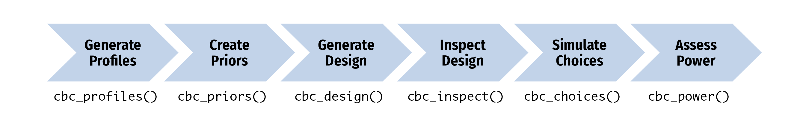

This package provides functions for generating and inspecting survey designs for choice-based conjoint survey experiments in R. Each function in the package begins with cbc_ and supports a step in the following process for designing and analyzing survey experiments:

After installing the package, got to the Getting Started page to learn how to use the package.
Installation
You can install the latest version of {cbcTools} from CRAN:
install.packages("cbcTools")or you can install the development version of {cbcTools} from GitHub:
# install.packages("pak")
pak::pak("jhelvy/cbcTools")Load the package with:
Author, Version, and License Information
- Author: John Paul Helveston https://www.jhelvy.com/
- Date First Written: October 23, 2020
- License: MIT
Citation Information
If you use this package for in a publication, I would greatly appreciate it if you cited it - you can get the citation by typing citation("cbcTools") into R:
citation("cbcTools")
#> To cite cbcTools in publications use:
#>
#> Helveston JP (2023). _cbcTools: Design and Evaluate Choice-Based
#> Conjoint Survey Experiments_. R package,
#> <https://jhelvy.github.io/cbcTools/>.
#>
#> A BibTeX entry for LaTeX users is
#>
#> @Manual{,
#> title = {{cbcTools}: Design and Evaluate Choice-Based Conjoint Survey Experiments},
#> author = {John Paul Helveston},
#> year = {2023},
#> note = {R package},
#> url = {https://jhelvy.github.io/cbcTools/},
#> }